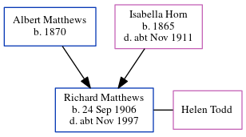

Ellen Horn (née Oliver) 1857 -
[ Home ] | [ Calendar ] | [ Surnames Index ] | [ Errors ] | [ Family History ]Ellen Oliver, the wife of James John Horn (the first cousin three-times-removed on the father's side of Nigel Horne), was born in Bethnal Green, London, England in 18571,2,3 and married James (an engine fitter with whom she had 5 children: Ellen, James John, Emma, Maud Florence and Albert Arthur, along with 1 surviving child) in Bethnal Green on 30 Nov 18794.
During her life, she was living at Gosette Street in Bethnal Green on 3 Apr 18811; at 155 Gosset Street in Bethnal Green on 5 Apr 18912; at 32 Belgrave Street, Stepney, London, England on 31 Mar 19013; and at 70 Warner Place in Bethnal Green on 2 Apr 19115.
Children
- Ellen was born c. 1881
- James John was born on 2 Dec 1882
- Emma was born c. 1886
- Maud Florence was born c. 1889
Citations
- 1881 England, Wales & Scotland Census - Findmypast (was age 24 and the wife of the head of the household)
- 1891 England, Wales & Scotland Census - Findmypast (was age 34 and the wife of the head of the household)
- 1901 England, Wales & Scotland Census - Findmypast (was age 44 and the wife of the head of the household)
- England & Wales Marriages 1837-2005 - Findmypast
- 1911 Census for England & Wales - Findmypast (was age 54 and the wife of the head of the household)
Family Tree
Map
Generated by ged2site. Last updated on Jul 3, 2024